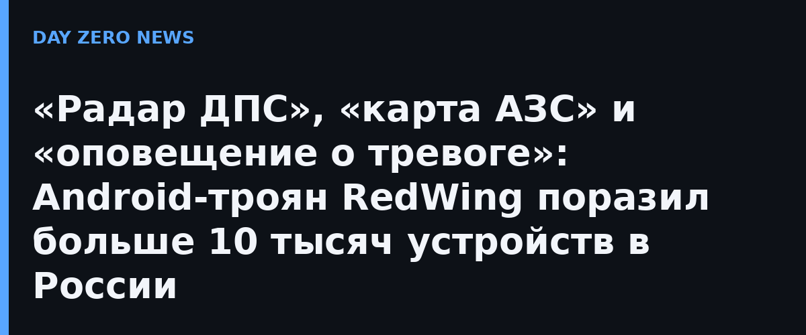

Компания F6, российский разработчик технологий борьбы с киберугрозами, рассказала о новой волне распространения Android-трояна RedWing: свежие образцы злоумышленники маскируют под приложения-«радары» мест патрулей ДПС. Например, в выборке вредоносного ПО аналитики нашли файл RadarMotobat.apk — судя по названию, его предлагали мотоциклистам как радар постов ГИБДД. Всего, по данным F6, с мая по сентябрь 2026 года встречалось более 800 образцов ВПО под обложками привычных утилит: радары беспилотной опасности, карты АЗС, сервисы видео 18+, VPN, читы и моды для популярных игр.
RedWing — «двуликое» вредоносное ПО: одна составляющая отвечает за удалённое управление заражённым смартфоном, вторая — за сбор данных. Троян перехватывает СМС и push-уведомления банков, крадёт контакты, файлы и данные банковских и криптовалютных сервисов, умеет подставлять фишинговые страницы поверх настоящих банковских приложений, разблокировать телефон без хозяина, смотреть через камеру и слушать через микрофон, а также участвовать в DDoS-атаках. После выдачи разрешения «Специальные возможности» приложение становится практически невидимым.
RedWing распространяется через Telegram по модели MaaS (вредонос как услуга) как минимум с начала 2026 года; впервые о нём сообщили исследователи Zimperium летом 2026-го, а уже через несколько дней первую кампанию в России зафиксировал F6. Одна из самых циничных схем — поддельные сайты приложения RadarTrevog «об оповещениях о воздушных атаках» с фальшивыми отзывами: домены в зоне .ru регистрировали 20 июля и 3 августа, а по инициативе CERT F6 их заблокировали. Троян написан русскоязычными авторами и нацелен на клиентов банков России, Узбекистана и Казахстана. По оценке F6, с середины июля по середину сентября количество скомпрометированных Android-устройств только в России превысило 10 тысяч.
Это оценки и рекомендации самой F6 и профильных СМИ, а не официально «подтверждённый масштаб катастрофы»: точное число жертв внедрённых банков не раскрывается. Практическая часть простая: ставить приложения только из официальных магазинов (RadarTrevog и «радар ДПС» туда не попали бы), не открывать APK-ссылки из Telegram-каналов, уделить внимание разрешениям «Специальные возможности» и «Доступ к уведомлениям» — именно они делают трояна невидимым и дают перехват СМС. Если такое разрешение выдавали «радару» или «моду» — удалить приложение, проверить телефон защитным сканером и сменить пароли банковского приложения с другого устройства.